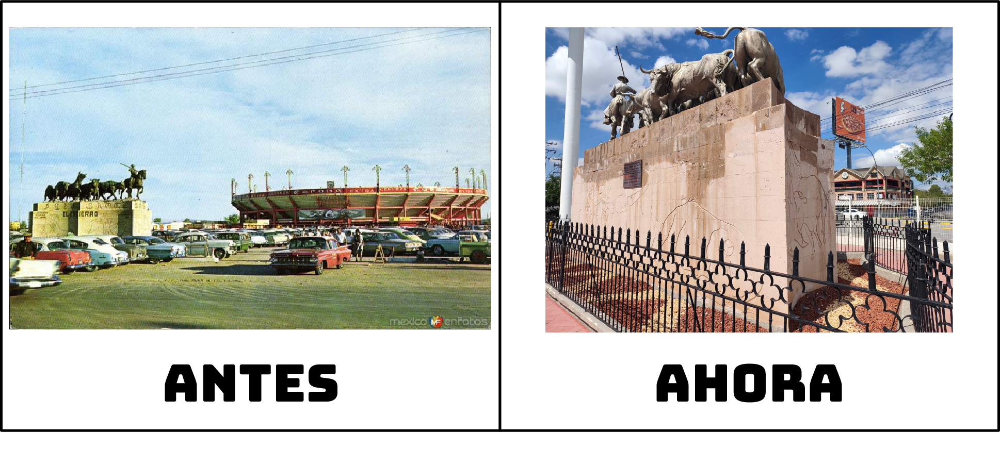
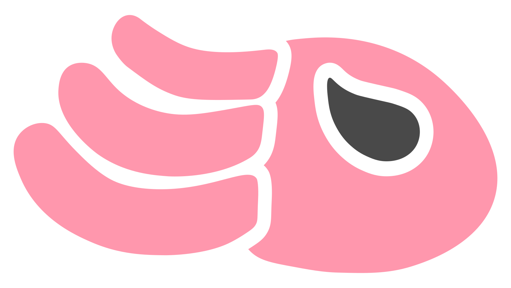
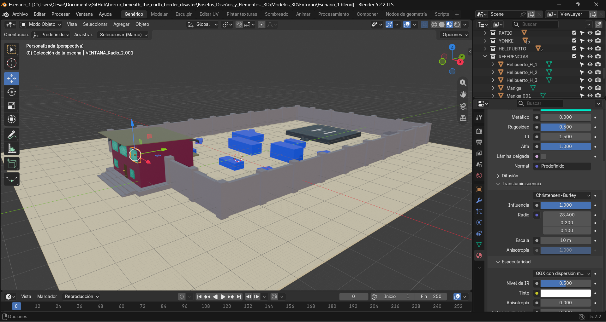
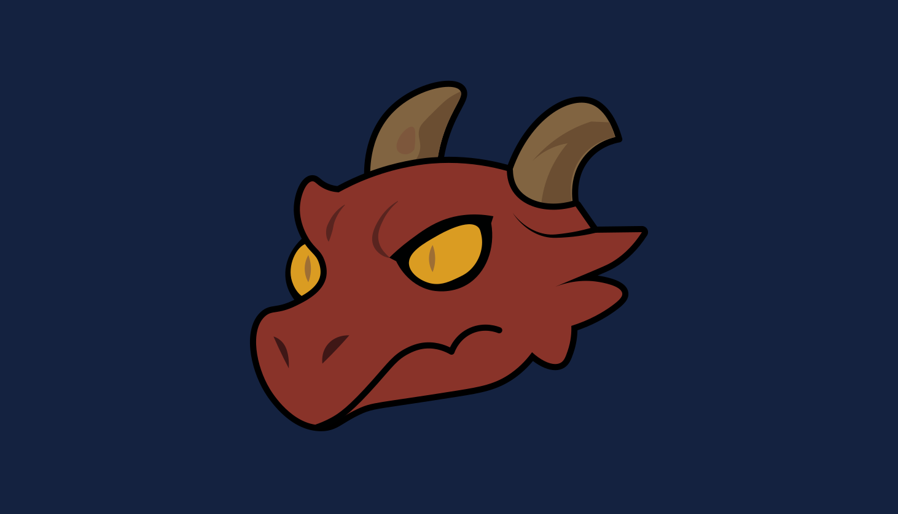
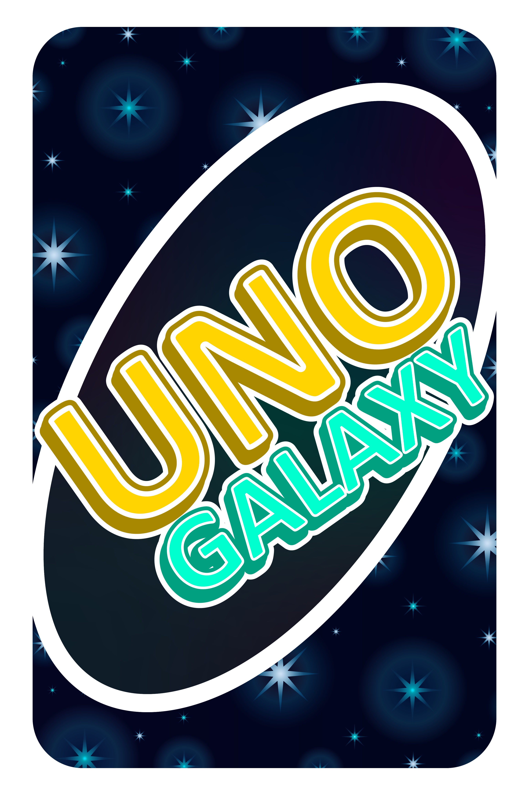

Memoria lúdica de Ciudad Juárez
Reconstrucción 3D e interacción WebGL para explorar espacios históricos de entretenimiento urbano.

CAP CREATIVE ARTS & PLAYPORTAFOLIO DIGITAL · 2026
Diseño digital · Experiencias interactivas · Videojuegos
HOLA, SOY CÉSAR
Soy César Aguayo Padrón, estudiante de Diseño Digital de Medios Interactivos en la Universidad Autónoma de Ciudad Juárez. Me interesa conectar la creatividad visual con la tecnología para desarrollar videojuegos, entornos 3D, interfaces y contenidos digitales.
Este espacio reúne una selección de proyectos académicos, personales y trabajos realizados durante mis prácticas profesionales.
CONOCE MI TRABAJO ↗LO QUE HE CREADO
Explora trabajos de diseño, desarrollo de videojuegos e interacción digital. Algunos proyectos continúan en desarrollo.

Reconstrucción 3D e interacción WebGL para explorar espacios históricos de entretenimiento urbano.

Videojuego de terror y supervivencia con escenarios low poly: vivienda, granja y cueva de montaña.

Videojuego para Android de fantasía y misterio que combina narrativa, exploración y realidad aumentada.

Diseño de cartas, identidad visual y reglas para una variante personalizada de juego de mesa.
El proyecto Memoria lúdica incluye comparaciones históricas y actuales. Los demás proyectos incorporarán más imágenes conforme avance su documentación.
DISEÑO CON PROPÓSITO
Durante mis prácticas profesionales en Colectiva, Arte, Comunidad y Equidad A.C. , participé en la creación de contenidos audiovisuales y materiales didácticos para actividades comunitarias.
Realicé registro fotográfico y audiovisual, producción de un reel y propuestas de recursos gráficos e interactivos.
Registro en campo, selección de material y edición audiovisual para difusión comunitaria.
After Effects · Audition · IllustratorPropuestas de memorama, lotería, ruleta de actividades y búsqueda del tesoro.
Diseño educativo · IlustraciónRecursos visuales reutilizables y apoyo a la comunicación de actividades comunitarias.
Diseño gráfico · Comunicación visualREGISTRO DE ACTIVIDADES
Fotografías tomadas durante las actividades y la producción del material audiovisual.
PRODUCCIÓN AUDIOVISUAL
Registro, selección y edición de material audiovisual para comunicar las actividades de la comunidad. Elaborado con Adobe Illustrator, After Effects y Audition.
MI CAJA DE HERRAMIENTAS
Adobe Illustrator · Photoshop · After Effects · Audition · Figma
Blender · Unity · Diseño de niveles · Prototipado interactivo
HTML · CSS · JavaScript · Visual Studio Code
¿TIENES UN PROYECTO EN MENTE?
¿Te interesa colaborar o conocer más sobre mi trabajo? Puedes contactarme a través de mis redes profesionales.